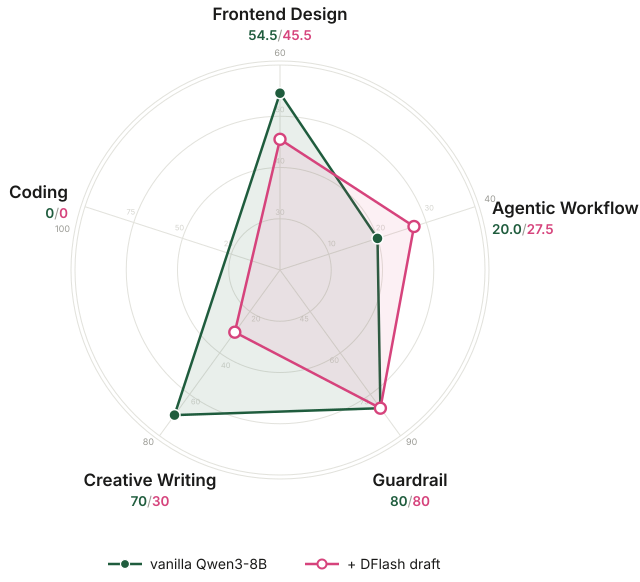
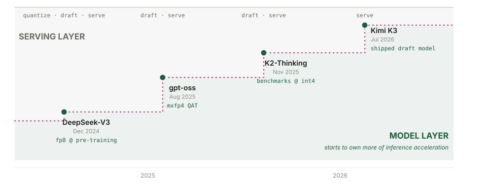

Speculative Decoding: How It Evolved, When It Stays Lossless, and What's Next
Introduction
What it is and why it matters
Every LLM you use generates one token at a time. This is , which is a major bottleneck of inference: producing n tokens takes n passes through a model with tens of billions of parameters. , introduced in 2023 (Leviathan et al., 2023), is an approach to accelerate this: a lightweight proposes the next few tokens, and the full verifies these drafts, accepting or rejecting each one. The verified output has the same as the target model (Chen et al., 2023), which is why speculative decoding is in theory.
Why is it faster than the vanilla model decoding? With speculative decoding, a small draft model guesses the next γ tokens (typically 3 to 8), and the target model checks all γ of them in a single , which costs about the same as decoding one token. Speed comes from three places: better drafts get accepted more often, smarter verification wastes less compute on bad drafts, and drafting itself can run in parallel (the teaser figure above).
Today, speculative decoding runs under nearly every hosted LLM, so the speed and quality of decoding affect everyone. Frontier labs lean on it in production: OpenAI cut GPT-5.6 Luna prices by 80% in 2026 and credited the cut partly to a redesigned draft model (OpenAI, 2026), Anthropic's fast mode serves the same Claude Opus model up to 2.5x faster at a premium rate (Anthropic, 2026), DeepSeek ships DSpark in its serving engine for a 51% throughput gain (DeepSeek, 2026), and Kimi K3 ships with its own draft model (Kimi Team, 2026). It is a cornerstone topic to learn in the LLM stack.
The target audience: If you know that an LLM generates text one token at a time, you have all the prerequisites for this teaching material. The content is designed progressively, each section building on the previous one:
- How it evolved. How does speculative decoding work, why is it lossless in theory, and how did four generations of draft models build upon each other?
- When it stays lossless. Introducing Losslessbench, and a hands-on lab to run the models yourself.
- What's next? What are the exciting new directions in accelerated inference?
By the end, you will have walked through how speculative decoding evolved and how to serve and evaluate spec models, grounded in research from NeurIPS and ICML: blockwise parallel decoding at NeurIPS 2018 (Stern et al.), lossless speculative decoding at ICML 2023 (Leviathan et al.), EAGLE-3 at NeurIPS 2025 (Li et al.), DFlash at ICML 2026 (Chen et al.), and its successor DFlash 2 (Inco AI, 2026).
You can find the full glossary for reference in A.1.
How it works
a. Fast decoding in action
To give you a quick example: serving Qwen3-8B on one B200, SGLang, the vanilla model decodes about 230 tokens per second; the first Harry Potter novel is roughly 100,000 tokens, more than seven minutes of decoding. With a DFlash draft model, conversational text decodes about 2.75x faster (Chen et al., 2026), ~630 tokens per second, cutting it under 3 minutes. See the Figure 1 comparison.
b. How rejection sampling works
So far we have covered why speculative decoding is fast. But why is it lossless? The answer is verification via : the target model checks every draft token against its own probabilities and accepts or rejects each one. Rejection sampling makes losslessness independent of the draft: even with a weak draft model, the output still follows the target model's own distribution (Leviathan et al. 2023, Appendix A.1). Losslessness depends on how strictly the rejection sampling is run, and Section 2 covers when it stays lossless and when it does not. Figure 2 walks through an example:
Here is the same rule in pseudocode:
# p(x): target model's probability for token x
# q(x): draft model's probability for token x
for each draft token x:
accept x with probability
min(1, p(x) / q(x))
# q(x) <= p(x): always accepted
# q(x) > p(x): accepted with probability p(x)/q(x)
on the first rejection:
discard the remaining draft tokens
resample one token from the residual
p′(x) = norm( max(0, p(x) - q(x)) )
Statistically, a token can be emitted in two ways: accepted directly from the draft, which is the accepted mass, or resampled by the target after a rejection, which is the residual mass. The two add up to the same as the target's probability:
P(x is emitted) = q(x) * min(1, p(x)/q(x)) # accepted mass = min(p(x), q(x))
+ P(reject) * p′(x) # residual mass = max(0, p(x) - q(x))
= min(p(x), q(x)) + max(0, p(x) - q(x))
= p(x) # same as the target's probability
c. How speed is measured
How much faster exactly, and how do we measure it? Table 1 defines the six metrics. Three of them are deciding factors: drafting time, verification time, and acceptance length. The other three, decoding speedup, per-token latency, and tokens per second, are computed from these three factors.
| Metric | Definition | Determined by |
|---|---|---|
| Decoding speedup (η) | η = L_target / L, relative speed over the autoregressive baseline | Per-token latency L and the baseline latency L_target |
| Per-token latency (L) | L = (T_draft + T_verify) / τ, the absolute time per generated token | T_draft, T_verify, and acceptance length τ |
| T_draft | The time the draft model spends proposing tokens | The draft model's size plus how many draft tokens are needed: the smaller it is, the faster it drafts |
| T_verify | The time the target model spends checking the proposed tokens | The target model's size, and how many draft tokens are verified |
| Tokens per second | ≈ 1 / L, the throughput the user feels | Per-token latency L |
| Acceptance length (τ) | The average number of draft tokens accepted per verification pass | How well the draft imitates the target: the closer its guesses, the more tokens survive verification |
Below is a math walk-through of achieving 2.3x decoding speedup.
T_verify = 4.3 ms # one target forward pass (Qwen3-8B at 230 tok/s ≈ 4.3 ms/token) T_draft = 1.3 ms # drafting cost τ = 3 tokens # accepted per verification pass L = (1.3 ms + 4.3 ms) / 3 ≈ 1.9 ms per token # per-token latency η = 4.3 ms / 1.9 ms ≈ 2.3x # speedup: 2.3x
d. Reading the acceptance rate
From the 2023 paper (Leviathan et al., Theorem 3.5), the acceptance rate is one minus the total variation distance between the draft and target distributions:
α = 1 − E[D_LK(p, q)]where p and q are the target and draft next-token distributions, and D_LK is the total variation distance between them. The same analysis also derives the acceptance length τ defined in Table 1 from the acceptance rate:
τ = (1 − α^(γ+1)) / (1 − α)where γ is the number of draft tokens per verification cycle.
Everything after 2023 inherits this theorem. Later papers do not re-verify losslessness: as long as verification keeps the accept-or-resample rule above, the output stays lossless however weak the draft is. What Theorem 3.5 adds is a way to read the speed numbers. A reported τ gives the acceptance rate α, and α is one minus a distributional distance: read τ, and you are reading how close the draft's distribution sits to the target's. Under strict verification this distance only decides speed. Once the acceptance threshold is relaxed, the distance would affect output quality.
To summarize, speculative decoding speed comes down to three factors: (1) drafting time, (2) verification time, and (3) acceptance length. Section 1 walks through the state-of-the-art architectures and how each generation improves these deciding factors.
1. How speculative decoding evolved
Speculative decoding speed comes down to three factors: drafting time, verification time, and acceptance length. Four generations of draft models each remove one bottleneck: EAGLE-3 lengthens acceptance, DFlash cuts drafting time, DSpark cuts verification time, and DFlash 2 pushes acceptance further. We walk through them in order.
1.1 EAGLE-3 (NeurIPS 2025) – longer acceptance length
The 2023 papers use a separate small LLM as the draft. It guesses from scratch, and hosting a second model costs memory. Medusa (Cai et al., 2024) replaced it with extra prediction heads on the target; EAGLE (Li et al., 2024) replaced the heads with a single decoder layer that reads the target's hidden features and drafts autoregressively (Figure 3). We highlight EAGLE-3 because it is what ships in production.
Earlier EAGLE models do not improve acceptance length with more training data. This is because the draft layer was trained to predict the target's next hidden feature as well as the next token. This training objective forced the model to reproduce the target's feature vectors; as a result, the draft spends its capacity copying features instead of guessing tokens better.
EAGLE-3 (Li et al., 2025) addresses this with a less-is-more training objective: it drops feature prediction and predicts the token directly, with features fused from low, middle, and high target layers instead of the top layer only. However, this introduces a new problem: at inference, the draft consumes its own outputs, which drift away from the training distribution, and acceptance collapses from the second step on. EAGLE-3 fixes this with training-time test: during training, the draft unrolls several steps and consumes its own outputs, so the distribution it trains on is the distribution it sees at inference.
The result is a longer acceptance length in EAGLE-3. It has a speedup of up to 6.5x over vanilla decoding, about 1.4x over EAGLE-2, and it is one of the most widely adopted draft models in production frameworks, with native support in both SGLang and vLLM.
One bottleneck remains. A small draft model runs fast, but it still proposes one token at a time. Can drafting be parallel instead?
1.2 DFlash (ICML 2026) – shorter drafting time
The key design choice of DFlash (Chen et al., 2026) is to make drafting parallel: generate the whole block at once, instead of token by token (Figure 4).
The beauty of DFlash is this very smart idea of diffusion block drafting. DFlash borrows it from diffusion models. In image and video generation, a diffusion model starts from pure noise and denoises every pixel in parallel, refining the whole canvas at once instead of painting it pixel by pixel (see the teaser figure). Text diffusion models carry the same idea over (Arriola et al., 2025): replace the noise with MASK tokens, and let the model predict every masked position in parallel. DFlash applies this to drafting: the draft block starts as a row of MASK tokens.
Diffusion drafting brings two benefits.
- Generating the whole block in a single forward pass makes drafting fast. An autoregressive draft spends one forward pass per token, so drafting γ tokens costs γ passes. DFlash drafts all γ positions in one pass, and the cost stays flat as the block grows (Figure 5). The flat cost also buys capacity: EAGLE-3 keeps a single layer to stay fast, while DFlash can afford five layers and still drafts faster. Five layers generating 16 tokens beat EAGLE-3's single layer generating 8, on both drafting cost and acceptance length.
- Conditioning on the target model's context features makes the drafts accurate. Feeding the draft only the last token's fused feature has two problems: it carries a single position, and a signal added only at the bottom of the stack fades in deeper layers. DFlash instead converts the target's features for every verified prefix position into keys and values and injects them into each draft layer's KV cache (Figure 6), so every layer sees the full context while the block is filled in. The result is high-quality drafts with higher acceptance rates.
As a result, DFlash cuts drafting time. This removes autoregressive drafting as the bottleneck: over 6x lossless acceleration across a range of models and tasks, up to 2.5x higher speedup than EAGLE-3.
The block positions are predicted independently, so draft tokens cannot see each other. How do we handle the acceptance decay toward the end of the block?
1.3 DeepSeek DSpark (2026) – shorter verification time
Unlike the previous models that optimize the draft mechanism, DSpark (DeepSeek, 2026) optimizes the verification mechanism: verify only the draft tokens that are worth it. DSpark keeps the parallel draft backbone and adds two modules (Figure 7).
- A lightweight sequential head restores dependencies inside the block, so later positions can condition on earlier ones.
- A confidence head estimates how likely each draft prefix is to survive verification, and a load-aware scheduler sets the verification length per request, based on the estimated survival probability and the engine's throughput profile.
Consequently, DSpark cuts verification time. Offline, DSpark improves accepted length by 16–31% over state-of-the-art drafters. Deployed in the DeepSeek-V4 production serving stack, it accelerates per-user generation by 60–85% at matched throughput over the MTP-1 production baseline (DeepSeek, 2026). DeepSeek open-sourced the DSpark checkpoints together with DeepSpec, an open-source training repository for speculative decoding.
DSpark cuts verification time, and its sequential head eases the decay. But that head walks token by token again. Was giving up parallel drafting the right trade?
1.4 DFlash 2 (2026) – longer acceptance length
DSpark tries to address the acceptance decay with a sequential token head, but DFlash 2 (Inco, 2026) argues drafting should stay parallel: it replaces DSpark's sequential head with a parallel selector. The cost gap is the argument: the sequential head re-predicts a full vocabulary distribution at every position, 77.8M parameters and 9.6% latency, while the selector does its job with 2.0M and 0.6%.
What makes parallel selection possible is that the right tokens are usually already there. Take a verified prefix "The fastest way to" and four masked positions. Each position's short candidate list contains the token the target would pick, but taking the top candidate at every position independently yields "get to to school": two neighbors picked the same word, and the sentence breaks. The coherent "get to school quickly" was sitting in the lists all along. Inco measured how much this is worth: if a perfect judge always picked the right candidate out of the top 16, acceptance length would jump from 4.27 to 6.79. The missing tokens are rarely the problem; the missing judgment is. The job is selection, and selection can run in parallel (Figure 8).
DFlash 2 does it with two additions.
- A path selector picks a coherent sequence. It scores each adjacent pair of candidates: the drafter's own logit for the candidate, plus a compatibility term that embeds the previous token and the candidate into compact 256-dimensional vectors and matches them under a context gate. Walking the best-scoring path from the last verified token replaces independent guesses, at 2M added parameters and 0.6% latency.
- Two-tap convolutions keep neighbors consistent. Inserted before and after each attention and feed-forward sublayer, they mix every position with its predecessor, and the first position reads the last verified token. Attention reads the long-range context, and the convolution handles local consistency inside the block. Reaching one position back recovers most of what ten extra layers would buy: the decay at the block's tail is a local problem, and a local fix is enough.
As we can tell, DFlash 2 raises acceptance length: from 4.92 to 5.97 tokens per verification pass on Qwen3.5-4B, 21% more output than DFlash at 1.3% added latency, and 2.7x to 3.4x throughput over autoregressive decoding on Qwen3.8-27B (Inco, 2026).
After four generations of speculative decoding architectures, do you have an idea that could be the next SOTA?
1.5 Case study: the decoding race
With all 4 models introduced, the race can now run in full comparison. See Figure 9. All 5 models decode the same sentence on the same target model.
| Method | τ | Speedup | Engines | Official drafters |
|---|---|---|---|---|
| EAGLE-3 | 2.66 | 6.5x | SGLang, vLLM | Llama, Qwen, DeepSeek V3, Kimi K2.5 |
| DFlash | 3.11 | >6x | SGLang, vLLM, TRT-LLM, llama.cpp | Meta, Poolside, NVIDIA, Xiaomi |
| DSpark | 3.72 | 60–85% vs MTP-1 | DeepSeek-V4 stack | GLM-5.2, Kimi K3 (RedHat) |
| DFlash 2 | ~3.76 (+21% vs DFlash, reported) | 2.7–3.4x | SGLang, vLLM, llama.cpp, Ollama | Qwen3.8-27B, Muse Glimmer |
All four models are in production today. Since March 2025, EAGLE-3 draft heads ship for Llama, Qwen, and DeepSeek V3. By spring 2026, DFlash was integrated into SGLang, vLLM, TensorRT-LLM, and llama.cpp, and NVIDIA reported up to 15x throughput with it on Blackwell GPUs (NVIDIA, 2026). DFlash alone has been downloaded more than 3.5 million times in seven months. By mid-2026, model builders release official drafters alongside the models themselves: Meta, Poolside, and NVIDIA for DFlash (Inco, 2026), Red Hat for DSpark (RedHatAI, 2026), and in July 2026, Kimi K3 shipped with its own speculator, trained during post-training (Kimi Team, 2026). See Table 2.
When it doesn't help. Speculative decoding is not free:
- The draft model takes extra memory. On a machine with little RAM or VRAM, hosting a second model next to the target can cost more than it saves.
- Every cycle pays the drafting cost up front. If the draft guesses poorly and acceptance stays low, the speedup can drop below 1x.
- Under heavy serving load, the GPU is already saturated by batching, so there is no spare compute for speculation. Engines can disable it at high concurrency.
So far we have covered how speculative decoding works and evolved. In the next section, we will discuss when it stays lossless.
2. When it stays lossless
Section 1 covered how speculative decoding ensures lossless acceleration. In this section, we go through when that holds and when it does not: (2.1) lossless in papers, (2.2) lossless in deployment, and (2.3) a case study, LosslessBench, which measures losslessness on domains beyond math and coding.
2.1 Lossless in papers
Even in the original papers, lossless is not unconditional. EAGLE-3 compares against Medusa only at temperature 0 but the relaxed acceptance variant is no longer lossless. This is because a method like Medusa is lossless depending on the temperature and on how strict the acceptance rule is:
- At temperature 0, decoding is deterministic: the target model selects its highest-probability next token, a draft token is accepted only when it matches, and it's lossless.
- At temperature 1, decoding is random: one position can have multiple valid answers. A method like Medusa accepts any draft tokens that clear a target probability threshold, so the mix of answers follows the draft's preference instead of the target's. The output distribution shifts and is no longer lossless (Cai et al., 2024).
Taking a prompt with two valid continuations: "The best pet is a ___". Say the target model assigns cat 0.5 and dog 0.5, and the draft model prefers dog:
- Rejection sampling: the draft proposes dog 80% of the time, but the target accepts only 5 out of 8 dog proposals (p/q = 0.5/0.8) and resamples the rest, so dog still comes out 50% of the time.
- A relaxed rule: every dog proposal that clears the threshold is accepted, so the output is biased toward the draft's favorite: the best pet becomes a dog with 0.8 probability. See Figure 10.
Lossless also depends on how verification is scheduled. A poorly designed scheduler introduces selection bias. The acceptance rate improves while the output distribution has already shifted. This makes the inference no longer lossless. To be more specific, the scheduler decides whether draft token k gets verified, and that decision must depend on only the prefix through 1 to k-1. If the draft proposes token A at position k, followed by token B at position k+1, the scheduler cannot use B to decide whether to verify A. (See the Figure 11 example.)
DSpark (DeepSeek, 2026) almost violated this non-anticipating rule. All prior methods rely on this precondition for their lossless claim to hold, but none of them tested whether the proof still holds when the precondition changes:
- The precondition. As noted above, lossless speculative decoding requires non-anticipating admission: deciding whether to verify position k may use only the prefix through 1 to k - 1.
- What's wrong in DSpark's scheduler. DSpark's scheduler ranks candidate draft tokens by their estimated probability of passing verification, then admits them one at a time while updating expected throughput. Scoring token k+1 from the preceding token k is ordinary. The problem arises because DSpark schedules the whole draft block jointly: its decision to admit token k can depend on the score of token k+1, and that score was computed from the proposed token k. The admission decision for k thus indirectly depends on k itself, violating non-anticipating admission, which the paper calls selection bias (Section 3.2.2, counterexample in Appendix A).
- DSpark's fix. DSpark stops the search as soon as expected throughput declines. This makes the truncation decision depend only on the prefix processed so far, eliminating the selection bias.
A relaxed acceptance rule or a peeking scheduler shifts the output distribution. In deployment, what else does losslessness depend on?
2.2 Lossless in deployment
In production, there are many configurations a user or company can adjust, and some of them decide whether decoding stays lossless. vLLM and SGLang, the two major engines, put it this way:
- SGLang keeps strict verification as the default: its acceptance thresholds ship at 1.0 (SGLang docs). A user can lower them to accept more tokens aggressively, and once they trade quality for speed this way, decoding is no longer lossless.
- vLLM splits losslessness into three layers (vLLM docs): (1) theoretical losslessness holds up to the precision limits of hardware numerics; (2) algorithmic losslessness is validated by convergence tests on the rejection sampler; (3) output stability is not promised. Layers 1 and 2 are covered by the paper's proof and the engine's tests, but layer 3 is not: a simple change in batch size can change logprobs, shifting the output distribution.
DSpark is a concrete example. When DeepSeek deployed it in production, the scheduler exposed two conflicts with real-world infrastructure (DeepSeek, 2026, Section 5.2), and they had to redesign around both to keep decoding lossless:
- The algorithm assumes a smooth hardware capacity curve, but real GPU throughput is jagged. The fix is removing the early stop and searching over the whole jagged curve.
- The algorithm decides how many draft tokens to verify at each step, but the serving engine needs the batch size to be fixed. The fix is scheduling asynchronously, using confidence predictions from two steps earlier to set the batch size. This also keeps the decision from seeing the current tokens, so the wider search in the first fix stays lossless.
Lastly, the production stack is complicated: it accelerates inference well beyond speculative decoding. Weights are (lossy). are compressed (lossy). The serving system adds KV-cache-aware routing and prefill-decode disaggregation on top. With this many factors stacked together, whether the deployment as a whole is still lossless is hard to gauge.
Suppose a deployment gets everything above right: strict thresholds, a non-anticipating scheduler, a redesign for every engine constraint. How do we verify it still serves the end user's goal across all the different domains? Evidence for losslessness is limited to the domains where it was tested.
The state-of-the-art speculative decoding methods are all evaluated on: coding, chat, and mathematics. EAGLE-3, DFlash, and DSpark report acceptance length and speedup on GSM8K, MATH-500, AIME25, HumanEval, MBPP, LiveCodeBench, MT-Bench, Alpaca, and Arena-Hard. DeepSpec uses the same nine benchmarks (Table 3). These benchmarks cover only a small slice of real-world tasks. Outside them, the empirical evidence for losslessness is simply absent. Figure 12 shows the 29 task types in OpenRouter's real traffic (OpenRouter, 2026): the tested domains account for only 17% of token usage, and the other 83% has never been measured.
| Method | Math | Code | Chat / instruction | Other |
|---|---|---|---|---|
| EAGLE-3 (2025) | GSM8K | HumanEval | MT-Bench, Alpaca | CNN/Daily Mail (summarization) |
| DFlash (2026) | GSM8K, MATH-500, AIME25 | HumanEval, MBPP, LiveCodeBench | MT-Bench, Alpaca | — |
| DSpark (2026) | GSM8K, MATH-500, AIME25 | HumanEval, MBPP, LiveCodeBench | MT-Bench, Alpaca, Arena-Hard | DeepSeek-V4 live traffic (speed only) |
| DeepSpec harness | gsm8k, math500, aime25 | humaneval, mbpp, livecodebench | mt-bench, alpaca, arena-hard-v2 | — |
So does lossless hold on the 83% domains/tasks that have never been measured?
2.3 Introducing Lossless Bench
The previous sections covered theoretical and algorithmic losslessness. To measure speculative decoding and inference acceleration on domains beyond coding and math, we built the LosslessBench.
LosslessBench evaluates across five domains: coding, agent workflows, creative writing, guardrails, and frontend design. See Figure 14, each axis uses its domain's own benchmark and metric:
- Frontend: OpenDesign. Each page is judged twice: a GPT-4o vision judge scores the rendered screenshot on alignment, aesthetics, and structure, and a browser agent clicks every component to score whether the page actually works.
- Creative: EQ-Bench longform score, judged over multi-chapter creative writing.
- Guardrail: XSTest, classification accuracy on safe vs unsafe prompts built to sit near the decision boundary.
- Coding: Terminal-Bench pass rate.
- Agent workflow: tau3-bench long-horizon agent tasks, action match rate.
The benchmarks in these papers are simple, single-turn tasks such as grade-school math and function-level coding. They capture only a narrow slice of what models are asked to do in practice, which motivates the five domains above for LosslessBench.
Section 1 showed that a reported acceptance length is an implicit token-level divergence measurement, which makes it a natural probe for the five new domains (Figure 13). As a sanity check, our harness reproduces DFlash's published numbers on its own benchmarks: 5.32 vs. their 5.98 on GSM8K, and 5.96 vs. their 5.52 on HumanEval. Across the five LosslessBench axes, acceptance falls from 5.24 to 1.84. The draft drifts furthest on the domains the papers never measured. Frontend design is an exception: its acceptance stays high while the generated pages break (Figure 15), because acceptance measures draft and target agreement, not output quality. Whether the divergence translates into task-level quality loss is what Figure 14 examines.


Explore the evaluation by yourself. Pick any domain and run the task:
Frontend Design Agentic Workflow Safety Guardrail Creative Writing Agentic Coding
Look closely at Figure 15: the four models did not generate the same page, or even the same number of tokens. Vanilla produced 2,683 tokens on the calendar brief, the accelerated models between 2,606 and 3,048. DFlash decoded fastest per token (341 vs 143 tok/s), and its calendar came out visibly broken.
Figure 16 is the evaluation result on the creative writing task: EAGLE-3 and DSpark wrote identical stories, while vanilla and DFlash each took a different trajectory from the same opening line. That leaves three distinct stories to judge:
| story | instruction following | Latin vocabulary | writing style |
|---|---|---|---|
| vanilla · 7/10 | 979 words. Ends entering the fight, close to violating the no-combat rule. | Correct, restrained. | Strongest sensory detail. Named cast. Ending falls back on a generic freedom monologue. |
| EAGLE-3 / DSpark · 6/10 | Best. 998 words, all constraints met. | Correct, sparse. | Weakest as fiction. Restates one thesis three times. No named characters. Explains politics rather than dramatizing it. |
| DFlash · 7.5/10 | Worst. 1,092 words, 9% over. Invents a sacrae bell. | Inaccurate, decorative. | Best structure. Full dawn-to-night arc, one side character with a backstory, strongest closing image. |
Table 4. The three distinct gladiator stories, judged on the brief's own constraints. Same target model, greedy decoding: the differences are trajectory divergence, not different models.
Overall, DFlash wins. Fiction lives on shape and character before compliance, and DFlash is the only story that delivers a complete day, a side character you remember, and a closing image that lands. Its violations are copyedit-level fixes. EAGLE-3 and DSpark followed every rule and produced the piece you forget first.
Interestingly, DFlash wrote the worst calendar page but the best story. Why do EAGLE-3 and DSpark match in writing and front end code, while DFlash stands apart? EAGLE-3 and DSpark share DeepSpec's training data, propose similar tokens. DFlash differs in training data, block size, and serving path, so the exact cause cannot be ruled out here, but likely caused by the difference in training data.
2.4 Hands-On Lab
This section is a hands-on tutorial: adjust the acceptance threshold and watch what happens. A Jupyter notebook walkthrough covers every stage with the measured results embedded, so you can read the whole lab before spending GPU time.
a. Serve your first accelerated model
In this section you serve the same model twice, once vanilla and once with a speculator, and measure inference acceleration on your own GPU.
The checkpoints come from DeepSpec, which releases drafts for EAGLE-3, DFlash, and DSpark on the same target, Qwen3-8B. The serving engine is vLLM. The first deployment will have a cold start (image build plus a 16GB weight download, about 10 minutes), but it is cached afterwards, so later experiments are faster.
Where to get the GPU. Any H100/A100 works. If you don't have one, get $30 free credits by signing up for a Modal account. That covers this whole lab (an H100 is ~$4/hour, a full afternoon uses $8-12).
pip install modal && modal setup # one-time account link
git clone https://github.com/lilyzhng/2026_NeurIPS_Education && cd 2026_NeurIPS_Education/submission/teaching_materials/lab
SPEC_MODE=vanilla modal deploy modal_vllm_serve.py # prints your server URLThe script pins the image, caches model weights in a volume so they download once, and exposes the server at a public URL. When done, modal app stop neurips-spec-lab releases the GPU.
Serve the vanilla model:
vllm serve Qwen/Qwen3-8B --port 8000Send a prompt and measure the generation speed (measure_decoding_speed.py). Then restart the server with the DeepSpec DSpark speculator (on Modal: SPEC_MODE=dspark modal deploy modal_vllm_serve.py) and run the same bench again:
vllm serve Qwen/Qwen3-8B --port 8000 --speculative-config \
'{"model": "deepseek-ai/dspark_qwen3_8b_block7", "method": "dspark", "num_speculative_tokens": 7}'Across 5 runs on one H100, the speedup is stable (mean ± std, Figure 17):

vLLM does not report acceptance length or per-token latency directly. Both come from real measurements: latency from the throughput above, and τ from the server's /metrics counters (5,180 draft tokens proposed at 7 per pass = ~740 verification passes for 2,606 generated tokens). See the calculation below:
L_target = 1 / 136.3 tok/s ≈ 7.3 ms # latency of the target (vanilla) model, per token L_dspark = 1 / 231.4 tok/s ≈ 4.3 ms # latency with the DSpark draft, per token τ ≈ 3.5 # acceptance length T_draft + T_verify = L_dspark × τ ≈ 15.1 ms # cost of one draft+verify pass η = L_target / L_dspark ≈ 1.70x # speedup
b. Adjust acceptance rate yourself
SGLang ships with --speculative-accept-threshold-single at 1.0, where rejection sampling matches the target model. Lowering it accepts draft tokens more aggressively, trading losslessness for speed. We benchmarked 1.0 → 0.4 on the LosslessBench frontend design task (L101, the same calendar-popup prompt as Figure 15, temperature 1), regenerating the page at each stop and recording acceptance length and decode speed (Figure 18). At temperature 0 the threshold does nothing: every stop returned byte-identical pages.
At threshold 1.0 the verifier runs rejection sampling: the page follows the target model's distribution, whatever the draft proposes. Below 1.0 the lossless free lunch is gone: any draft token whose target probability clears the threshold is accepted without resampling, and the output drifts toward the draft. τ climbs from 4.9 to 7.2: 48% more draft-preferred tokens get through. The prompt asks for a stunning translucent calendar popup, judge each page with your own eyes.
c. The decoding race
In this section you watch four deployments race on the same prompt: the vanilla model against EAGLE-3, DFlash, and DSpark, all on H100. The point is to let the reader get a sense of what inference acceleration does on real-world tasks.
SPEC_MODE=eagle3 modal deploy modal_vllm_serve.py
SPEC_MODE=dspark modal deploy modal_vllm_serve.py
modal run modal_dflash_offline.py # DFlash, see note below
python3 build_race_demo.py # assembles the demo from your outputsThese commands reproduce the two live demos in Section 2.3 (Figures 15 and 16).
Note: vllm serve crashes on DFlash in stable 0.28.0, and only the offline LLM() path is CI-tested, so modal_dflash_offline.py runs this way. Its draft is also the z-lab release rather than DeepSpec's.
d. Run LosslessBench on your own server
Let's use LosslessBench task L101: "Stunning translucent calendar popup that smoothly blends into the interface."
python3 generate_frontend_task.py --url <your-url> --label vanillaGreedy decoding, so losslessness makes a concrete prediction: a speculator should reproduce the vanilla HTML exactly. Here is what we measured instead:
Run it twice, once on the vanilla server and once on the DSpark server, and compare the two HTML files:
| Comparison | Identical prefix | First divergence | Final length |
|---|---|---|---|
| vanilla vs DSpark | 8,299 chars (76% of the page) | transition: color 0.2s → 0.3s | 10,924 vs 10,535 chars |
The rejection-sampling proof still holds at the algorithm level: it assumes both paths compute the same target probabilities. In practice the speculative path runs different kernels, the logits shift within floating-point precision, and a near-tie token (0.2s vs 0.3s here) falls the other way. Both pages render and satisfy the brief, and they are different pages: output stability is a separate layer, one that no engine promises (Section 2.2).
e. Measure per-domain speed
The outputs vary by domain, and so does the speed. Measure each decoding method on the coding, creative, and frontend prompts with race_domains.py:
| domain | vanilla | DSpark | EAGLE-3 | DFlash |
|---|---|---|---|---|
| coding | 138.1 | 311.9 (2.3x) | 158.8 (1.15x) | 311.3 (2.25x) |
| creative | 138.2 | 416.7 (3.0x) | 229.5 (1.66x) | 265.6 (1.92x) |
| frontend | 137.6 | 333.1 (2.4x) | 208.2 (1.51x) | 274.0 (1.99x) |
Table 6. Decoding speed by domain: the same draft buys different speedups on different text.
As shown in Table 6, vanilla decodes at about 138 tok/s in every domain. The speculators' speed varies with the domain, because acceptance depends on how well the draft guesses that kind of text: DSpark reaches 3.0x on creative and 2.3x on coding. On this harness DSpark leads with acceptance length τ 3.5, DFlash follows at τ 2.2 to 2.5, and EAGLE-3 trails at τ 1.3.
Then the open exercise: swap in prompts from a domain nobody measured (OpenRouter's other 83%), rerun the race, and report three numbers together: acceptance rate, task correctness, domain coverage. LosslessBench samples 100 such tasks across the full OpenRouter distribution if you want a ready-made prompt set.
3. What's Next
In this section we go through the exciting new directions for speculative decoding: (3.1) multimodal speculative decoding and (3.2) speculative decoding going from tokens to tool calls.
3.1 Multimodal Speculative Decoding
The methods above all target language-only models, but a growing share of decoding workloads is multimodal. A computer-use agent reads a screenshot at every step of its trajectory, whether it is browsing the web or checking its own front-end code, and parsing User uploaded documents, charts, and videos in the chat.
So the question is: can we expect speculative decoding to work for multimodal language models as well?
The answer is not yet: no multimodal speculative decoding method has reached mainstream adoption. vLLM merged its first VLM support for EAGLE-3 (Qwen2.5-VL only) in v0.11.1 (vLLM #22872) while its other speculative paths still reject multimodal models, and SpecForge, SGLang's draft-training framework, lists VLM integration as roadmap (SpecForge, 2025).
On the research side, MMSpec, the first VLM speculative decoding benchmark, measures over 600 samples across ten algorithms (MMSpec, 2026), and its main finding is that speculative decoding designed for language models can degrade on multimodal input, because the draft model has limited vision capability compared to the target model. This happens in two ways:
- Text-only drafters miss the image entirely. The standard drafter is a small language model with no component for vision input (MASSV, 2025).
- Small VLM does not close the gap. ViSpec's hypothesis is that a large VLM filters redundant image information layer by layer, while a small model struggles to do the same, so vision capability degrades disproportionately as the drafter shrinks (ViSpec, NeurIPS 2025).
The early findings converge on the same design choice: share the target's visual representations with the drafter, rather than training vision capacity into a small model from scratch. MASSV connects the target's own vision encoder to the draft model through a lightweight projector and distills on the target's responses, reaching up to 30% longer accepted length and 1.46x end-to-end speedup over text-only drafting (MASSV, 2025). ViSpec trains a vision-aware drafter and reports the first substantial speedups on VLM decoding (ViSpec, NeurIPS 2025).
3.2 From Speculating Tokens to Speculating Tool Calls
Speculative decoding so far operates on tokens. The same predict-then-verify idea extends one level up, to tool calls in agents. For an agent, the expensive unit is the tool call: a sub-LLM query or an API request takes seconds, while the code that issues it is still being generated.
Early work has started to formalize this. Speculative Interaction Agents define speculative tool calling as a way to cut time-to-first-token (Hooper et al., 2026), and Act While Thinking pre-executes tool calls predicted from patterns in the reasoning trace (Ji et al., 2026). A shared benchmark is still missing: each paper evaluates on its own setup, either borrowing OOLONG (2025) or building a private task corpus.
Speculative programmatic tool calling is a concrete instantiation (Zhang, 2026). While the model is still writing code, a second interpreter runs the partial program and launches any tool call whose inputs are already determined. When the code executes for real, a matching pre-launched call returns its stored result, and a mismatched one is discarded and re-executed. A wrong guess costs only the wasted early launch. On OOLONG with Qwen3-30B, this yields 1 to 1.2x end-to-end speedup.
If agent workloads keep growing, this direction will likely follow the trajectory of token-level speculative decoding: better speculation policies, acceptance rate as a first-class metric, and a shared benchmark to standardize the speedup claims.
References
- Smith, J. E. (1981). A Study of Branch Prediction Strategies. ISCA 1981. dl.acm.org/doi/10.5555/800052.801871
- Stern, M., Shazeer, N., & Uszkoreit, J. (2018). Blockwise Parallel Decoding for Deep Autoregressive Models. NeurIPS 2018. arxiv.org/abs/1811.03115
- Chen, C., Borgeaud, S., Irving, G., Lespiau, J.-B., Sifre, L., & Jumper, J. (2023). Accelerating Large Language Model Decoding with Speculative Sampling. arxiv.org/abs/2302.01318
- Leviathan, Y., Kalman, M., & Matias, Y. (2023). Fast Inference from Transformers via Speculative Decoding. ICML 2023. arxiv.org/abs/2211.17192
- Cai, T. et al. (2024). Medusa: Simple LLM Inference Acceleration Framework with Multiple Decoding Heads. arxiv.org/abs/2401.10774
- Li, Y. et al. (2024). EAGLE: Speculative Sampling Requires Rethinking Feature Uncertainty. arxiv.org/abs/2401.15077
- Li, Y. et al. (2025). EAGLE-3: Scaling up Inference Acceleration of Large Language Models via Training-Time Test. arxiv.org/abs/2503.01840
- Arriola, M., Gokaslan, A., Chiu, J. T., Yang, Z., Qi, Z., Han, J., Sahoo, S. S., & Kuleshov, V. (2025). Block Diffusion: Interpolating Between Autoregressive and Diffusion Language Models. ICLR 2025. arxiv.org/abs/2503.09573
- Anthropic (2026). Fast Mode (Research Preview). Claude Platform Docs. platform.claude.com
- Chen, J. et al. (2026). DFlash: Block Diffusion for Flash Speculative Decoding. arxiv.org/abs/2602.06036
- DeepSeek (2026). DSpark: Confidence-Scheduled Speculative Decoding with Semi-Autoregressive Generation. arxiv.org/abs/2607.05147
- Inco (2026). DFlash 2: Keep Drafting Parallel. inco.ai/blog/dflash2
- Kimi Team (2026). Kimi K3 Technical Report. arxiv.org/abs/2607.24653
- NVIDIA (2026). Boost Inference Performance up to 15x on NVIDIA Blackwell Using DFlash Speculative Decoding. developer.nvidia.com
- OpenAI (2026). Announcing a Major Price Drop for 5.6 Terra and Luna and Fast Mode for 5.6-Sol. community.openai.com
- RedHatAI (2026). GLM-5.2 DSpark Speculator (preview). Hugging Face model card. huggingface.co/RedHatAI/GLM-5.2-speculator.dspark-preview
- DeepSeek-AI (2024). DeepSeek-V3 Technical Report. arxiv.org/abs/2412.19437
- MASSV (2025). Multimodal Adaptation and Self-Data Distillation for Speculative Decoding of Vision-Language Models. arxiv.org/abs/2505.10526
- OpenAI (2025). gpt-oss-120b & gpt-oss-20b Model Card. arxiv.org/abs/2508.10925
- ViSpec (2025). Vision-Aware Speculative Decoding for Vision-Language Models. NeurIPS 2025. neurips.cc/virtual/2025/poster/115277
- OOLONG (2025). A Benchmark for Long-Context Agent Workloads. arxiv.org/abs/2511.02817
- SGLang Team (2025). SpecForge: Train Your Own Speculative Decoding Models. LMSYS blog. lmsys.org/blog/2025-07-25-spec-forge
- MMSpec (2026). A Benchmark for Speculative Decoding on Vision-Language Models. arxiv.org/abs/2603.14989
- Hooper, C. et al. (2026). Speculative Interaction Agents. arxiv.org/abs/2605.13360
- Ji, K. et al. (2026). Act While Thinking: Pre-Executing Tool Calls from Reasoning Traces. arxiv.org/abs/2603.18897
- Zhang, A. (2026). Speculative Programmatic Tool Calling. alexzhang13.github.io/blog/2026/spec-ptc
- Zhang, L. (2026). LosslessBench: Does Inference Acceleration Hold Beyond Math and Coding? lilyzh.ng/writing/losslessbench
- OpenRouter (2026). LLM Rankings: Traffic by Task Type. openrouter.ai/rankings
- SGLang docs. Speculative Decoding. docs.sglang.ai
- vLLM docs. Speculative Decoding. docs.vllm.ai
Citation
You can cite this article here:
@article{zhang2026losslessspec,
title = "Speculative Decoding: How It Evolved, When It Stays Lossless, and What's Next",
author = "Zhang, Lily and Kanna, Madison",
year = "2026",
month = "August",
url = "https://neurips2026-speculative-decoding.vercel.app/"
}
Appendix
Glossary
- Acceptance length (τ)
- The average number of draft tokens the target model accepts each time it checks a batch, counting the extra token it adds itself.
- Acceptance rate (α)
- How often a proposed draft token passes the target model's check. The more the draft agrees with the target, the higher it is.
- Acceptance threshold
- A serving setting for how strictly draft tokens are checked. At 1.0 the check is exact; lowering it lets more draft tokens through.
- Autoregressive decoding
- Generating text one token at a time, with each token depending on the one before it.
- Block diffusion
- Predicting a whole block of masked tokens at once, instead of one token at a time.
- Bonus token
- The one extra token the target model produces itself each time it checks the draft.
- Draft model
- A cheaper model or draft layer that proposes several likely next tokens.
- Forward pass
- Running the model on its current input to produce scores for possible next tokens.
- Greedy decoding
- Always picking the single most likely next token, so the same prompt gives the same output.
- KV cache
- Stored attention information from earlier tokens that lets the model avoid recomputing the whole context.
- Lossless
- The model produces the same distribution of outputs as the unaccelerated version.
- MASK token
- A placeholder slot in a draft block that the model fills in with a predicted token.
- Probability distribution
- The model's probabilities over all possible next tokens.
- Quantization
- Storing model weights with fewer bits to make inference faster and cheaper, sometimes with accuracy loss.
- Rejection sampling
- A method that accepts or replaces draft tokens so the final outputs still follow the target model's distribution.
- Speculative decoding
- A generation method that uses a fast smaller draft model to propose several tokens, which are then verified by a larger slower target model.
- Target model
- The larger model whose output distribution we want to preserve.
- Temperature
- A setting for how random sampling is. At 0 the model always picks its top choice; at 1 it samples with its natural randomness.
- Total variation distance
- A measure of how different two sets of probabilities are. The closer the draft's guesses are to the target's, the more tokens get accepted.
- Vanilla model
- The target model running without any acceleration, used as the speed baseline.
A.2 Frontend gap under a vendor-assembled stack
We identified a significant gap in the frontend design evaluation under a vendor-assembled stack (fp4 quantization, speculative decoding, KV routing, prefill-decode disaggregation): the same GLM 5.2 model lost 5.6 points, 76.9 to 71.2 (Figure A2). Design output is open-ended and hard for a draft to predict. It is absent from the speculative decoding benchmarks. However, frontend and UI tasks carry significant weight in the OpenRouter task usage (Figure 12). In other words, users would receive degraded performance when they use spec models tuned for coding and math only. The other four domains showed no significant gap. The culprit in that stack was quantization, so the measurement says little about speculative decoding on its own.


A.3 Should the Lab Own Inference Acceleration?
Step by step, acceleration is moving from the serving layer into frontier labs. DeepSeek pushed FP8 into pre-training with DeepSeek-V3 (DeepSeek-AI, 2024). OpenAI shipped gpt-oss MXFP4 weights with quantization-aware training (OpenAI, 2025). K2-Thinking reported every benchmark number at INT4, making the quantized model the official model. Kimi K3 has the draft model fine-tuned as part of post-training, and validated before the model leaves the lab (Kimi Team, 2026).

See Figure A3. Each step, from 2025 to 2026, shows frontier labs owning more of the inference acceleration space. The work used to be owned by the serving layer. An inference provider would take the released FP8 weights, quantize them, train a draft model on top, and serve it on OpenRouter for the general public. This meant the inference layer owned the quality evaluation. But now, the labs do this work themselves and validate it before the model ships, leaving less room for the inference layer (LosslessBench, Figure 6).
This ownership shift fixes the missing quality validation: the lab validates the accelerated model before it ships, closing the gap Section 2 described.